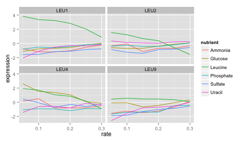

Data visualisation, interactive data analysis, statistical programming
Case study: gene expression in starvation
Through the process of gene regulation, a cell can control which genes are transcribed from DNA to RNA- what we call being "expressed". (If a gene is never turned into RNA, it may as well not be there at all). This provides a sort of "cellular switchboard" that can activate some systems and deactivate others, which can speed up or slow down growth, switch what nutrients are transported into or out of the cell, and respond to other stimuli. A gene expression microarray lets us measure how much of each gene is expressed in a particular condition. We can use this to figure out the function of a specific gene (based on when it turns on and off), or to get an overall picture of the cell's activity.
Brauer (2008) used microarrays to test the effect of starvation and growth rate on baker’s yeast (S. cerevisiae, a popular model organism for studying molecular genomics because of its simplicity). Basically, if you give yeast plenty of nutrients (a rich media), except that you sharply restrict its supply of one nutrient, you can control the growth rate to whatever level you desire (we do this with a tool called a chemostat). For example, you could limit the yeast's supply of glucose (sugar, which the cell metabolizes to get energy and carbon), of leucine (an essential amino acid), or of ammonium (a source of nitrogen).
"Starving" the yeast of these nutrients lets us find genes that:
- Raise or lower their activity in response to growth rate. Growth-rate dependent expression patterns can tell us a lot about cell cycle control, and how the cell responds to stress.
- Respond differently when different nutrients are being limited. These genes may be involved in the transport or metabolism of those nutrients.
Featured R packages
install.packages(c("readr", "tidyr", "dplyr"))
Get the data and tidy it
The data, tidying code and examples are borrowed from here and here.
require(readr)
original_data = read_delim("http://www.maths.usyd.edu.au/u/gartht/Brauer2008_DataSet1.tds",
delim = "\t")
## View(original_data) # opens a spreadsheet view in RStudio
dim(original_data)
## [1] 5537 40
Fix the name column by splitting on ||, remove white space and drop unecessary variables. We also want to ensure that we have tidy data -- each variable should be one column - the column headers are values not variable names.
require(dplyr)
require(tidyr)
nutrient_names <- c(G = "Glucose", L = "Leucine", P = "Phosphate",
S = "Sulfate", N = "Ammonia", U = "Uracil")
cleaned_data = original_data %>%
separate(NAME,
c("name", "BP", "MF", "systematic_name", "number"),
sep = "\\|\\|") %>%
mutate_each(funs(trimws), name:systematic_name) %>%
select(-number, -GID, -YORF, -GWEIGHT) %>%
gather(sample, expression, G0.05:U0.3) %>%
separate(sample, c("nutrient", "rate"), sep = 1, convert = TRUE) %>%
mutate(nutrient = plyr::revalue(nutrient, nutrient_names)) %>%
filter(!is.na(expression), systematic_name != "")
names(cleaned_data)
## [1] "name" "BP" "MF" "systematic_name"
## [5] "nutrient" "rate" "expression"
The above code chunk is doing a lot of processing very sucinctly using the pipe operator (see the magrittr package for details). The gather() function melts the data - instead of one row per gene, we now have one row per gene per sample. We've gathered 36 columns together into two variables (expression and sample) then separated sample out into two variables (nutrient and rate). Note that sample never appears in the final output... the wonders of the pipe (%>%) operator.
Visualise the data
Below is a classical approach using ggplot2.
Look at one gene LEU1:
library(ggplot2)
cleaned_data %>%
filter(name == "LEU1") %>%
ggplot(aes(rate, expression, color = nutrient)) +
geom_line()

LEU1's expression is far higher (more “turned on”) when the cell is being starved of leucine than in any other condition, because in that case the cell has to synthesize its own leucine. And as the amount of leucine in the environment (the growth rate) increases, the cell can focus less on leucine production, and the expression of those genes go down. We’ve just gotten one snapshot of our gene’s regulatory network, and how it responds to external stimuli.
To look at all the genes in the leucine biosynthesis process subset using the BP variable, to filter for all genes in that process, and then facet to create sub-plots for each.
cleaned_data %>%
filter(BP == "leucine biosynthesis") %>%
ggplot(aes(rate, expression, color = nutrient)) +
geom_line() +
facet_wrap(~name)

LEU1, LEU2, and LEU4 all show a similar pattern, where starvation of leucine causes higher gene expression. LEU4 also appears to respond to glucose starvation as well.
We can do some basic model fitting, adding lines of best fit using geom_smooth(method = "lm", se = FALSE):
cleaned_data %>%
filter(BP == "leucine biosynthesis") %>%
ggplot(aes(rate, expression, color = nutrient)) +
geom_point() +
geom_smooth(method = "lm", se = FALSE) +
facet_wrap(~name)
This is great, but there are so many different genes and processes - how can we look at them all? How do you deal with collaborators who are constantly harassing you asking for plots of different genes? Shiny is the answer!
Instructions
- Create a new shiny app in RStudio by going File > New Project > New Directory > Shiny Web Application > Give your project a name and hit create (open in a new window might be a good idea too).
- Create a new file in the shiny app directory called
global.R - Paste the following data processing code into
global.R
### Data preparation
require(readr)
require(dplyr)
require(tidyr)
require(ggplot2)
original_data = read_delim("http://www.maths.usyd.edu.au/u/gartht/Brauer2008_DataSet1.tds", delim = "\t")
nutrient_names <- c(G = "Glucose", L = "Leucine", P = "Phosphate",
S = "Sulfate", N = "Ammonia", U = "Uracil")
cleaned_data = original_data %>%
separate(NAME,
c("name", "BP", "MF", "systematic_name", "number"),
sep = "\\|\\|") %>%
mutate_each(funs(trimws), name:systematic_name) %>%
select(-number, -GID, -YORF, -GWEIGHT) %>%
gather(sample, expression, G0.05:U0.3) %>%
separate(sample, c("nutrient", "rate"), sep = 1, convert = TRUE) %>%
mutate(nutrient = plyr::revalue(nutrient, nutrient_names)) %>%
filter(!is.na(expression), systematic_name != "")
- Whatever's in
global.Rwill be read and executed before the shiny app loads. If you want you can download the data set and include it in the same folder asui.R,server.Randglobal.Rthen simplify theread_delim()function to refer to justBrauer2008_DataSet1.tds(without loading it over the internet every time). - Run the app to make sure it's working in this basic form.
Replace the default plot with the first plot we generated above showing results for the LEU1 gene. Make sure this is working by running the app before proceeding any further.
You want this in the
server.Rfile
output$plot1 = renderPlot({
cleaned_data %>%
filter(name == "LEU1") %>%
ggplot(aes(rate, expression, color = nutrient)) +
geom_line() + theme_bw(base_size = 14) +
facet_wrap(~name + systematic_name)
})
- And this in the mainPanel part of the
ui.Rfunction:
plotOutput("plot1")
- We want to be able to explore different genes instead of just having the LEU1 gene plotted. To do this we need a drop down menu and then we need to feed the results of that drop down menu into the plot. Add this code chunk to the sidebarPanel section in the
ui.Rfile:
selectizeInput(inputId = "gene",
label = "Select gene",
choices = sort(unique(cleaned_data$name)),
selected = "LEU1",
multiple = FALSE)
- Run to app again to see if it works. You should get a menu showing up on the left hand side listing all the genes. This is what the
selectizeInputfunction does - it takes a bunch ofchoicesand offers them to the user as a dropdown list ifmultiple=FALSE(or a bit fancier where you can select multiple valuesmultiple=TRUE). - Now we need to link the selected gene to the plot. The selected gene will be accessible though
input$gene. To explain this,inputis common to all shiny pachages, it is a named list that contains all the inputs that you define in shiny. We specified the namegeneusing theinputIdargument to theselectizeInputfunction. In theserver.Rfunction update the plot function to the following:
output$plot1 = renderPlot({
filter(is.element(name, input$gene)) %>%
ggplot(aes(rate, expression, color = nutrient)) +
geom_line() + theme_bw(base_size = 14) +
facet_wrap(~name + systematic_name)
})
What if we wanted to plot multiple genes? Try changing
multiple=TRUEin the selectize input and seeing what happens. It probably won't work when multiple genes are selected. We need to update out filtering in theserver.Rfunction to account for multiple gene options. Something likefilter(is.element(name, input$gene))should do the trick.What if we wanted to have the option of a line of best fit? Add in a checkbox to the sidebarPanel so that your sidebarPanel function should now look like this:
sidebarPanel(
selectizeInput(inputId = "gene",
label = "Select gene(s)",
choices = sort(unique(cleaned_data$name)),
selected = "LEU1",
multiple = TRUE),
checkboxInput(inputId = "line",
label = "Add line of best fit?",
value = FALSE)
)
- Think about how to incorporate this logical input into the
server.Rcode. When the checkbox is tickedinput$linewill return a value ofTRUE. When unticked,input$linereturns a value ofFALSE. It makes sense to use anifstatement to get two different behaviours. In theserver.Radapt your code to something like:
output$plot1 = renderPlot({
if(input$line){
cleaned_data %>%
filter(is.element(name, input$gene)) %>%
ggplot(aes(rate, expression, color = nutrient)) +
geom_point() + theme_bw(base_size = 14) +
geom_smooth(method = "lm", se = FALSE) +
facet_wrap(~name)
} else {
cleaned_data %>%
filter(is.element(name, input$gene)) %>%
ggplot(aes(rate, expression, color = nutrient)) +
geom_line() + theme_bw(base_size = 14) +
facet_wrap(~name + systematic_name)
}
})
- OK so at this point, you should be able to plot multiple genes and toggle between the ploting just the raw data and fitting simple linear regression lines (with the raw observations in the background).
- What if we wanted to be able to select all the genes related to a particular biological process? We'll need a new dropdown menu and a new plot. Do this by adapting the above code. Optionally you can include it in a new tab using
tabsetPanelin theui.Rfile - you can see how this is done in the solutions, but this is probably more advanced than we really need for now. - Once you're happy with your app, head over to shinyapps.io, create an account and follow the instructions to push your app to the web so you can share the link and show off your fine work to all your collaborators!
Suggested solution
See here for suggested solutions - though there's many ways to accomplish the same thing, so yours might not be exactly the same. Try not to cheat, unless you really have to.
References
- Robinson D (2015). "Cleaning and visualizing genomic data: a case study in tidy analysis", blog post. http://varianceexplained.org/r/tidy-genomics/
- Brauer et al. (2008). Coordination of Growth Rate, Cell Cycle, Stress Response, and Metabolic Activity in Yeast. Molecular Biology of the Cell 19(1) 352-367. doi: 10.1091/mbc.E07-08-0779